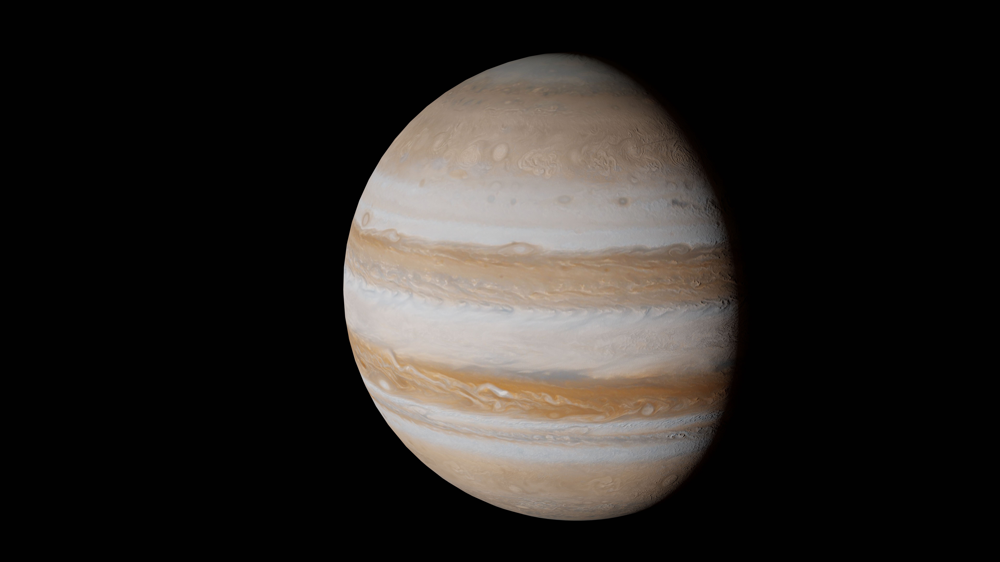

Юпітер

Юпітер — найбільша планета Сонячної системи, п'ята від Сонця. Він складається переважно з водню та гелію й має потужне магнітне поле.
Цікаві факти про Юпітер
- Велика червона пляма на Юпітері — це гігантський шторм, який триває вже сотні років і більший за всю Землю.
- Юпітер обертається навколо своєї осі найшвидше серед усіх планет Сонячної системи — одна доба там триває менше ніж 10 годин.
- Навколо Юпітера обертаються десятки супутників, а чотири найбільші з них (Іо, Європа, Ганімед і Каллісто) відкрив ще Галілео Галілей.